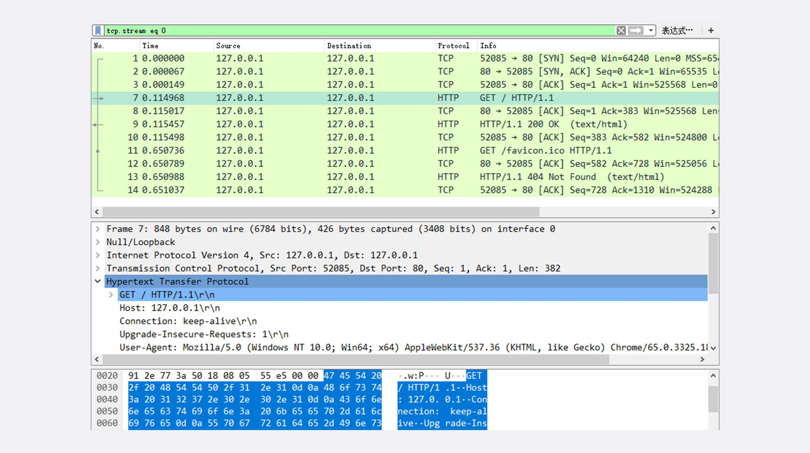

- 00 开篇词｜To Be a HTTP Hero.md
- 01 时势与英雄：HTTP的前世今生.md
- 02 HTTP是什么？HTTP又不是什么？.md
- 03 HTTP世界全览（上）：与HTTP相关的各种概念.md
- 04 HTTP世界全览（下）：与HTTP相关的各种协议.md
- 05 常说的“四层”和“七层”到底是什么？“五层”“六层”哪去了？.md
- 06 域名里有哪些门道？.md
- 07 自己动手，搭建HTTP实验环境.md
- 08 键入网址再按下回车，后面究竟发生了什么？.md
- 09 HTTP报文是什么样子的？.md
- 10 应该如何理解请求方法？.md
- 11 你能写出正确的网址吗？.md
- 12 响应状态码该怎么用？.md
- 13 HTTP有哪些特点？.md
- 14 HTTP有哪些优点？又有哪些缺点？.md
- 15 海纳百川：HTTP的实体数据.md
- 16 把大象装进冰箱：HTTP传输大文件的方法.md
- 17 排队也要讲效率：HTTP的连接管理.md
- 18 四通八达：HTTP的重定向和跳转.md
- 19 让我知道你是谁：HTTP的Cookie机制.md
- 20 生鲜速递：HTTP的缓存控制.md
- 21 良心中间商：HTTP的代理服务.md
- 22 冷链周转：HTTP的缓存代理.md
- 23 HTTPS是什么？SSLTLS又是什么？.md
- 24 固若金汤的根本（上）：对称加密与非对称加密.md
- 25 固若金汤的根本（下）：数字签名与证书.md
- 26 信任始于握手：TLS1.2连接过程解析.md
- 27 更好更快的握手：TLS1.3特性解析.md
- 28 连接太慢该怎么办：HTTPS的优化.md
- 29 我应该迁移到HTTPS吗？.md
- 30 时代之风（上）：HTTP2特性概览.md
- 31 时代之风（下）：HTTP2内核剖析.md
- 32 未来之路：HTTP3展望.md
- 33 我应该迁移到HTTP2吗？.md
- 34 Nginx：高性能的Web服务器.md
- 35 OpenResty：更灵活的Web服务器.md
- 36 WAF：保护我们的网络服务.md
- 37 CDN：加速我们的网络服务.md
- 38 WebSocket：沙盒里的TCP.md
- 39 HTTP性能优化面面观（上）.md
- 40 HTTP性能优化面面观（下）.md
- 结束语 做兴趣使然的Hero.md
08 键入网址再按下回车，后面究竟发生了什么？
经过上一讲的学习，你是否已经在自己的电脑上搭建好了“最小化”的 HTTP 实验环境呢？
我相信你的答案一定是“Yes”，那么，让我们立刻开始“螺蛳壳里做道场”，在这个实验环境里看一下 HTTP 协议工作的全过程。
使用 IP 地址访问 Web 服务器
首先我们运行 www 目录下的“start”批处理程序，启动本机的 OpenResty 服务器，启动后可以用“list”批处理确认服务是否正常运行。
然后我们打开 Wireshark，选择“HTTP TCP port(80)”过滤器，再鼠标双击“Npcap loopback Adapter”，开始抓取本机 127.0.0.1 地址上的网络数据。
第三步，在 Chrome 浏览器的地址栏里输入http://127.0.0.1/，再按下回车键，等欢迎页面显示出来后 Wireshark 里就会有捕获的数据包，如下图所示。

如果你还没有搭好实验环境，或者捕获与本文里的不一致也没关系。我把这次捕获的数据存成了 pcap 包，文件名是“08-1”，放到了 GitHub 上，你可以下载到本地后再用 Wireshark 打开，完全精确“重放”刚才的 HTTP 传输过程。
抓包分析
在 Wireshark 里你可以看到，这次一共抓到了 11 个包（这里用了滤包功能，滤掉了 3 个包，原本是 14 个包），耗时 0.65 秒，下面我们就来一起分析一下"键入网址按下回车"后数据传输的全过程。
通过前面“破冰篇”的讲解，你应该知道 HTTP 协议是运行在 TCP/IP 基础上的，依靠 TCP/IP 协议来实现数据的可靠传输。所以浏览器要用 HTTP 协议收发数据，首先要做的就是建立 TCP 连接。
因为我们在地址栏里直接输入了 IP 地址“127.0.0.1”，而 Web 服务器的默认端口是 80，所以浏览器就要依照 TCP 协议的规范，使用“三次握手”建立与 Web 服务器的连接。
对应到 Wireshark 里，就是最开始的三个抓包，浏览器使用的端口是 52085，服务器使用的端口是 80，经过 SYN、SYN/ACK、ACK 的三个包之后，浏览器与服务器的 TCP 连接就建立起来了。
有了可靠的 TCP 连接通道后，HTTP 协议就可以开始工作了。于是，浏览器按照 HTTP 协议规定的格式，通过 TCP 发送了一个“GET / HTTP/1.1”请求报文，也就是 Wireshark 里的第四个包。至于包的内容具体是什么现在先不用管，我们下一讲再说。
随后，Web 服务器回复了第五个包，在 TCP 协议层面确认：“刚才的报文我已经收到了”，不过这个 TCP 包 HTTP 协议是看不见的。
Web 服务器收到报文后在内部就要处理这个请求。同样也是依据 HTTP 协议的规定，解析报文，看看浏览器发送这个请求想要干什么。
它一看，原来是要求获取根目录下的默认文件，好吧，那我就从磁盘上把那个文件全读出来，再拼成符合 HTTP 格式的报文，发回去吧。这就是 Wireshark 里的第六个包“HTTP/1.1 200 OK”，底层走的还是 TCP 协议。
同样的，浏览器也要给服务器回复一个 TCP 的 ACK 确认，“你的响应报文收到了，多谢。”，即第七个包。
这时浏览器就收到了响应数据，但里面是什么呢？所以也要解析报文。一看，服务器给我的是个 HTML 文件，好，那我就调用排版引擎、JavaScript 引擎等等处理一下，然后在浏览器窗口里展现出了欢迎页面。
这之后还有两个来回，共四个包，重复了相同的步骤。这是浏览器自动请求了作为网站图标的“favicon.ico”文件，与我们输入的网址无关。但因为我们的实验环境没有这个文件，所以服务器在硬盘上找不到，返回了一个“404 Not Found”。
至此，“键入网址再按下回车”的全过程就结束了。
我为这个过程画了一个交互图，你可以对照着看一下。不过要提醒你，图里 TCP 关闭连接的“四次挥手”在抓包里没有出现，这是因为 HTTP/1.1 长连接特性，默认不会立即关闭连接。

再简要叙述一下这次最简单的浏览器 HTTP 请求过程：
- 浏览器从地址栏的输入中获得服务器的 IP 地址和端口号；
- 浏览器用 TCP 的三次握手与服务器建立连接；
- 浏览器向服务器发送拼好的报文；
- 服务器收到报文后处理请求，同样拼好报文再发给浏览器；
- 浏览器解析报文，渲染输出页面。
使用域名访问 Web 服务器
刚才我们是在浏览器地址栏里直接输入 IP 地址，但绝大多数情况下，我们是不知道服务器 IP 地址的，使用的是域名，那么改用域名后这个过程会有什么不同吗？
还是实际动手试一下吧，把地址栏的输入改成“http://www.Chrono.com”，重复 Wireshark 抓包过程，你会发现，好像没有什么不同，浏览器上同样显示出了欢迎界面，抓到的包也同样是 11 个：先是三次握手，然后是两次 HTTP 传输。
这里就出现了一个问题：浏览器是如何从网址里知道“www.Chrono（加微信：642945106 发送“赠送”领取赠送精品课程 发数字“2”获取众筹列表。）.com”的 IP 地址就是“127.0.0.1”的呢？
还记得我们之前讲过的 DNS 知识吗？浏览器看到了网址里的“www.Chrono（加微信：642945106 发送“赠送”领取赠送精品课程 发数字“2”获取众筹列表。）.com”，发现它不是数字形式的 IP 地址，那就肯定是域名了，于是就会发起域名解析动作，通过访问一系列的域名解析服务器，试图把这个域名翻译成 TCP/IP 协议里的 IP 地址。
不过因为域名解析的全过程实在是太复杂了，如果每一个域名都要大费周折地去网上查一下，那我们上网肯定会慢得受不了。
所以，在域名解析的过程中会有多级的缓存，浏览器首先看一下自己的缓存里有没有，如果没有就向操作系统的缓存要，还没有就检查本机域名解析文件 hosts，也就是上一讲中我们修改的“C:\WINDOWS\system32\drivers\etc\hosts”。
刚好，里面有一行映射关系“127.0.0.1 www.Chrono（加微信：642945106 发送“赠送”领取赠送精品课程 发数字“2”获取众筹列表。）.com”，于是浏览器就知道了域名对应的 IP 地址，就可以愉快地建立 TCP 连接发送 HTTP 请求了。
我把这个过程也画出了一张图，但省略了 TCP/IP 协议的交互部分，里面的浏览器多出了一个访问 hosts 文件的动作，也就是本机的 DNS 解析。

真实的网络世界
通过上面两个在“最小化”环境里的实验，你是否已经对 HTTP 协议的工作流程有了基本的认识呢？
第一个实验是最简单的场景，只有两个角色：浏览器和服务器，浏览器可以直接用 IP 地址找到服务器，两者直接建立 TCP 连接后发送 HTTP 报文通信。
第二个实验在浏览器和服务器之外增加了一个 DNS 的角色，浏览器不知道服务器的 IP 地址，所以必须要借助 DNS 的域名解析功能得到服务器的 IP 地址，然后才能与服务器通信。
真实的互联网世界要比这两个场景要复杂的多，我利用下面的这张图来做一个详细的说明。

如果你用的是电脑台式机，那么你可能会使用带水晶头的双绞线连上网口，由交换机接入固定网络。如果你用的是手机、平板电脑，那么你可能会通过蜂窝网络、WiFi，由电信基站、无线热点接入移动网络。
接入网络的同时，网络运行商会给你的设备分配一个 IP 地址，这个地址可能是静态分配的，也可能是动态分配的。静态 IP 就始终不变，而动态 IP 可能你下次上网就变了。
假设你要访问的是 Apple 网站，显然你是不知道它的真实 IP 地址的，在浏览器里只能使用域名“www.apple.com”访问，那么接下来要做的必然是域名解析。这就要用 DNS 协议开始从操作系统、本地 DNS、根 DNS、顶级 DNS、权威 DNS 的层层解析，当然这中间有缓存，可能不会费太多时间就能拿到结果。
别忘了互联网上还有另外一个重要的角色 CDN，它也会在 DNS 的解析过程中“插上一脚”。DNS 解析可能会给出 CDN 服务器的 IP 地址，这样你拿到的就会是 CDN 服务器而不是目标网站的实际地址。
因为 CDN 会缓存网站的大部分资源，比如图片、CSS 样式表，所以有的 HTTP 请求就不需要再发到 Apple，CDN 就可以直接响应你的请求，把数据发给你。
由 PHP、Java 等后台服务动态生成的页面属于“动态资源”，CDN 无法缓存，只能从目标网站获取。于是你发出的 HTTP 请求就要开始在互联网上的“漫长跋涉”，经过无数的路由器、网关、代理，最后到达目的地。
目标网站的服务器对外表现的是一个 IP 地址，但为了能够扛住高并发，在内部也是一套复杂的架构。通常在入口是负载均衡设备，例如四层的 LVS 或者七层的 Nginx，在后面是许多的服务器，构成一个更强更稳定的集群。
负载均衡设备会先访问系统里的缓存服务器，通常有 memory 级缓存 Redis 和 disk 级缓存 Varnish，它们的作用与 CDN 类似，不过是工作在内部网络里，把最频繁访问的数据缓存几秒钟或几分钟，减轻后端应用服务器的压力。
如果缓存服务器里也没有，那么负载均衡设备就要把请求转发给应用服务器了。这里就是各种开发框架大显神通的地方了，例如 Java 的 Tomcat/Netty/Jetty，Python 的 Django，还有 PHP、Node.js、Golang 等等。它们又会再访问后面的 MySQL、PostgreSQL、MongoDB 等数据库服务，实现用户登录、商品查询、购物下单、扣款支付等业务操作，然后把执行的结果返回给负载均衡设备，同时也可能给缓存服务器里也放一份。
应用服务器的输出到了负载均衡设备这里，请求的处理就算是完成了，就要按照原路再走回去，还是要经过许多的路由器、网关、代理。如果这个资源允许缓存，那么经过 CDN 的时候它也会做缓存，这样下次同样的请求就不会到达源站了。
最后网站的响应数据回到了你的设备，它可能是 HTML、JSON、图片或者其他格式的数据，需要由浏览器解析处理才能显示出来，如果数据里面还有超链接，指向别的资源，那么就又要重走一遍整个流程，直到所有的资源都下载完。
小结
今天我们在本机的环境里做了两个简单的实验，学习了 HTTP 协议请求 - 应答的全过程，在这里做一个小结。
- HTTP 协议基于底层的 TCP/IP 协议，所以必须要用 IP 地址建立连接；
- 如果不知道 IP 地址，就要用 DNS 协议去解析得到 IP 地址，否则就会连接失败；
- 建立 TCP 连接后会顺序收发数据，请求方和应答方都必须依据 HTTP 规范构建和解析报文；
- 为了减少响应时间，整个过程中的每一个环节都会有缓存，能够实现“短路”操作；
- 虽然现实中的 HTTP 传输过程非常复杂，但理论上仍然可以简化成实验里的“两点”模型。
课下作业
- 你能试着解释一下在浏览器里点击页面链接后发生了哪些事情吗？
- 这一节课里讲的都是正常的请求处理流程，如果是一个不存在的域名，那么浏览器的工作流程会是怎么样的呢？
欢迎你把自己的答案写在留言区，与我和其他同学一起讨论。如果你觉得有所收获，也欢迎把文章分享给你的朋友。